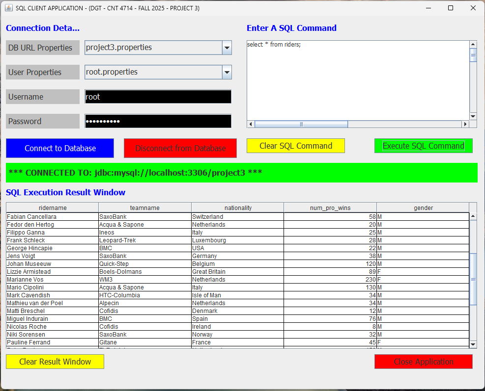
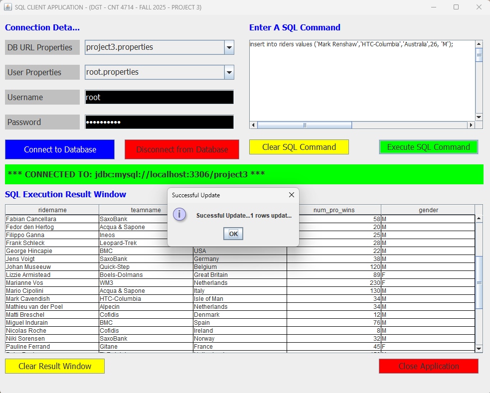

The SQL Client App is java application that uses Java Database Connectivity (JDBC) and MSQL connector library to connect to MSQL database and display the results in a Java Swing graphical user interface. The app was built using:
MSQLDB
JAVA Swing

The result table of a select * command in the SQL Client App

The results of an update command in the SQL Client App